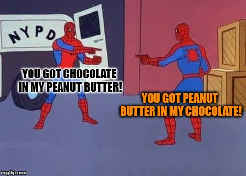

Get To Know Alpine.js!
Nolan Erck
South of Shasta
About Me
- Owner / Director, South of Shasta Consulting
- Manager, Sac Interactive Tech Meetup
- Reformed Video Game Developer - Grim Fandango, SimPark, StarWars Rogue Squadron, etc...
- Music Junkie
Code And Slides
github.com/nolanerck
get-to-know-alpine-js
Alpine.js
- "jQuery for the Modern Web"
- Similar to Vue.js
- No build step required
- Node / npm install not required
Alpine.js
- Very lightweight and simple, by design
- 1 JS file
- 15 attributes, 6 properties, 2 methods
- Alpine components, not apps
- For specific bits of interactivity on the page
- If you need sitename.com/#routes, use Vue, React, etc
Alpine.js vs jQuery vs Vue
- jQuery: manipulate the entire DOM
- Alpine: designate a portion of the DOM to be managed (similar-ish to Vue)
- Template syntax also similar to Vue
- Demo 1: Hello World
x-data
- Where all your Alpine stuff lives
- Define variables
- Event handlers
- Listen for Alpine init
- Define methods
- Everything that makes up an Alpine component can go in here
- Similar to new Vue( {} );
Conditional logic
- x-show and x-if
- x-show: hide/show
Still in the DOM, just hidden
- x-if: add/remove
Actually removed from the DOM, not just hidden
Must use <template> tag and a root element
- Demo 2: Conditionals
Attribute Binding
- x-bind
- x-bind:someHTMLAttribute="the value"
- <img x-bind:src="myVariableName">
- Shorthand, just use ":" without x-bind
<img :src="myVariableName">
- I don't like the shorthand syntax
- Demo 3: Attribute Binding
Modifiers
- Can use modifiers to (duh) modify how data is handled
- By default JavaScript (x-model) treats form data like a string
- .number and .boolean for better numeric and bool data functionality
- debounce
<input type="text" x-model.debounce.500ms="search">
- throttle
<input type="text" x-model.throttle.500ms="search">
- Demo 7: Form Binding w/ Modifiers
Getters
- For methods that return data based on some other state
- If the method uses any data, Alpine will notice if the data changes
- ala "Computed Properties" in Vue (but not cached)
- get fullName(){ ... }
- "get" not req'd, but adds to self-documenting
- Demo 8: Getters
Events
- x-on
- Run code for dispatched events
- <button x-on:click="alert('Hello World!')">Say Hi</button>
-
Shorthand version:
<button @click="alert('Hello World!')">Say Hi</button>
- IMHO: use x- stuff everywhere, for consistency and self-documentation
- Demo 9: Events
JS and HTML mixed together?!

Separate JS and HTML
- Can move all the code to .js file
- <div x-data="theApp"> (ala Vue)
- x-cloak to hide things until properly init'd
- Demo 10: Separate files
Multiple Alpine Components
- Each x-data is a "component"
- x-data's cannot talk to each other directly
- Tho you can dispatch messages ala vanilla JS
- https://alpinejs.dev/magics/dispatch
- Use Alpine.store() for global state management
Transitions
- x-transition
- For CSS transition animation things
Magics
- $magicsLookLikeThis
- $watch - Watch a component property to see when it changes and run some code
- init( $watch( 'firstName', value => console.log(value)) );
- $dispatch - shortcut for dispatching browser events
-
<button @click="$dispatch('notify', { message: 'Hello World!' })">
Even more cool stuff!
- Alpine.store()
- Other Magics (el, refs, store, nextTick, root, data, id)
- Plugins
- Advanced things like CSP, Reactivity, Extending, Async
- Plus more!
Learning in 30 minutes a day.
Questions? Comments?
- southofshasta.com
- nolan@southofshasta.com
- Twitter: @southofshasta @nolanerck
- Github: nolanerck
Thanks!